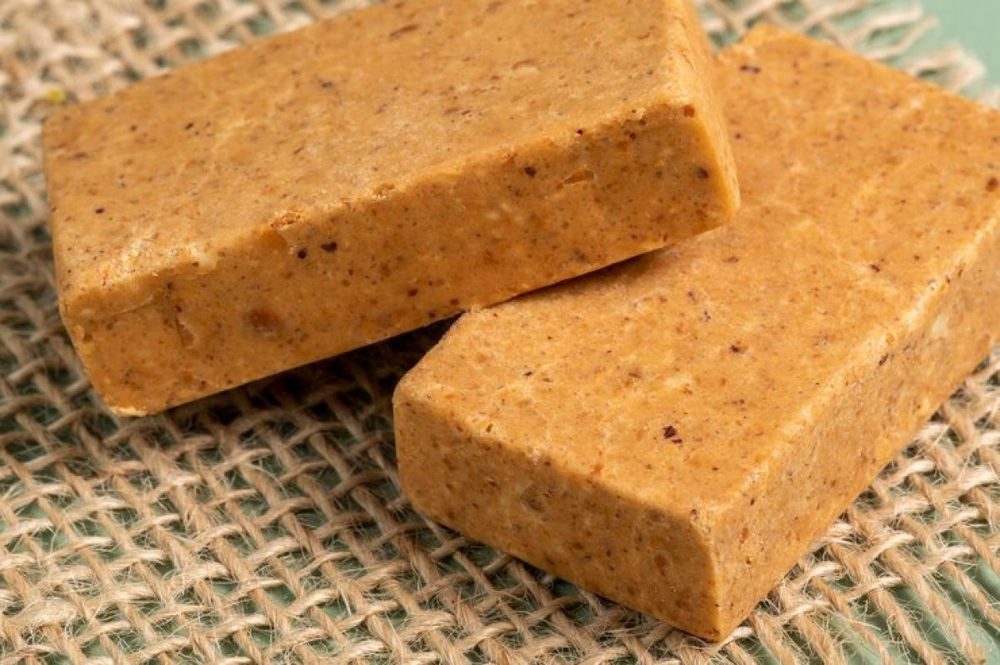
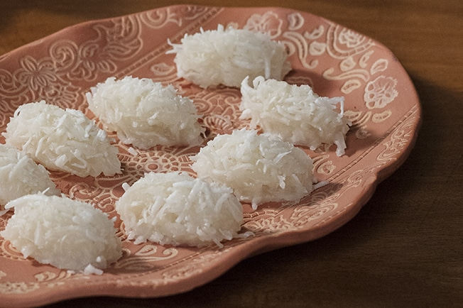

Os melhores doces do Brasil



O brigadeiro tradicional é um doce feito de leite condensado, cacau ou chocolate em pó e manteiga.
É muito consumido em festas de aniversários. Outra forma popular é ser deixado em uma textura mais mole para ser comido de colher.
A pacoça apesar de super simples, açucar amassada com amendoim, é muito consumida no Brasil, principalmente nas festas juninas.
Mais um doce super simples e que faz sucesso entre os brasileiros. Formada por leite condensado e coco fresco, a cocada é muito consumida no nordeste, mas também esta fortemente presente nas festas.
A pacoça apesar de super simples, açucar amassada com amendoim, é muito consumida no Brasil, principalmente nas festas juninas.
Mais um doce super simples e que faz sucesso entre os brasileiros. Formada por leite condensado e coco fresco, a cocada é muito consumida no nordeste, mas também esta fortemente presente nas festas.